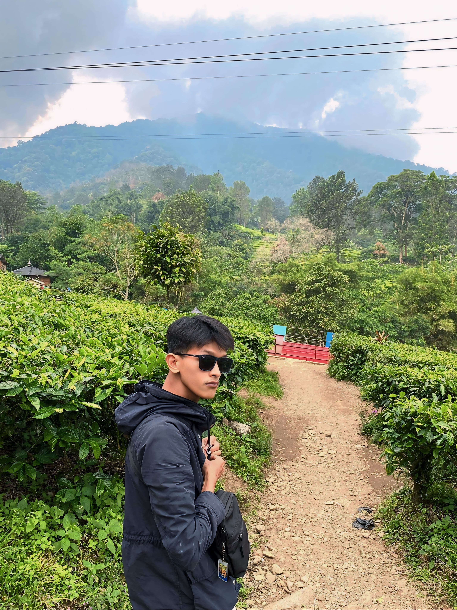

<?php include 'header.php'; ?>
<section class="bio">
  <div class="container">
    <h2>Muhammad Wildan</h2>
    

    <p>INTRODUCTION</p>
Hi, I'm Muhammad Wildan composer and songwriter who believes that music is the most honest way to tell stories.

I start making music from things that are close to me: anxieties, hopes, fears, and unfulfilled dreams. My music is heavily influenced by alternative rock, blues, and the raw, energetic sounds of the Rocket Flyers Group. But I also like to explore more serene, minimalist, or even experimental nuances.

Currently, I'm actively creating songs for personal projects, short film scoring, and various forms of creative collaboration. For me, the most important thing is that the work feels real, not just pleasing to the ear, but also has flavor.

If you're interested in working together, or just want to chat about music, don't hesitate to contact me.
Let's create something honest and loud.

<!-- Tombol terjemahan -->
<button onclick="toggleTranslate()" style="margin-top: 15px; padding: 10px 15px; background-color: #4CAF50; color: white; border: none; border-radius: 5px; cursor: pointer;">
  Tampilkan Terjemahan Bahasa Indonesia
</button>
<!-- Paragraf terjemahan Bahasa Indonesia -->
<div id="translation" style="display: none; margin-top: 20px; background-color: #f0f0f0; padding: 15px; border-radius: 10px; line-height: 1.6;">
Hai, saya Muhammad Wildan composer dan penulis lagu yang percaya bahwa musik adalah cara paling jujur untuk bercerita.

Saya mulai membuat musik dari hal-hal yang dekat: keresahan, harapan, rasa takut, sampai mimpi yang belum kesampaian. Musik saya banyak dipengaruhi oleh rock alternatif, blues, dan suara-suara mentah penuh energi ala Kelompok Penerbang Roket. Tapi saya juga senang mengeksplorasi nuansa yang lebih syahdu, minimalis, atau bahkan eksperimental.

Saat ini, saya aktif menciptakan lagu untuk proyek pribadi, scoring film pendek, dan berbagai bentuk kolaborasi kreatif. Bagi saya, yang paling penting adalah karya itu terasa nyata, bukan hanya enak didengar, tapi juga punya rasa.

Kalau kamu tertarik bekerja sama, atau cuma mau ngobrol soal musik, jangan ragu buat hubungi saya.
Let’s create something honest and loud.  
</div>
<script>
  function toggleTranslate() {
    var x = document.getElementById("translation");
    x.style.display = x.style.display === "none" ? "block" : "none";
  }
</script>
<p>jika ingin mengenal lebih dalam silahkan klik sosial media saya:</p>
            <div class="sosmed"></div>
            <a href="https://instagram.com/wildanmalicky/" target="_blank">
  
</a>

<a href="https://facebook.com/" target="_blank">
  
</a>


      </div>
  </div>
        </article>
    </main>
    </body>
    
</html>
  </div>
</section>
<?php include 'footer.php'; ?>
